Kyoto Institute of Technology Department of Applied Chemistry, Polymer Materials Design Course
Polymer Synthesis Laboratory KAMBAYASHI LAB.
Publications
2026
-
Hayaru Takasaki and Naoya Kanbayashi*
"Controlling the Overall Shape of Helical Poly(quinoline-2,3-diylmethylene)s in Solution through Local Stereochemistry of a Stilbene Linking Unit"
Polym. Chem., 2026, **, ******** DOI:10.1039/D6PY00733C
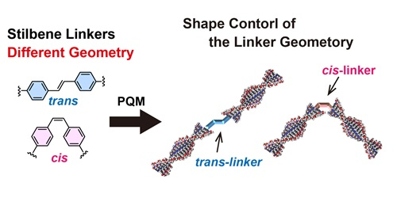
-
Naoya Kanbayashi,* Kiyotaka Onitsuka*
"Synthesis of optically active polymers containing a main-chain hydroxamic acid backbone via asymmetric polymerization"
Polym. Chem., 2026, 17, 1747-1754 DOI:10.1039/d6py00186f
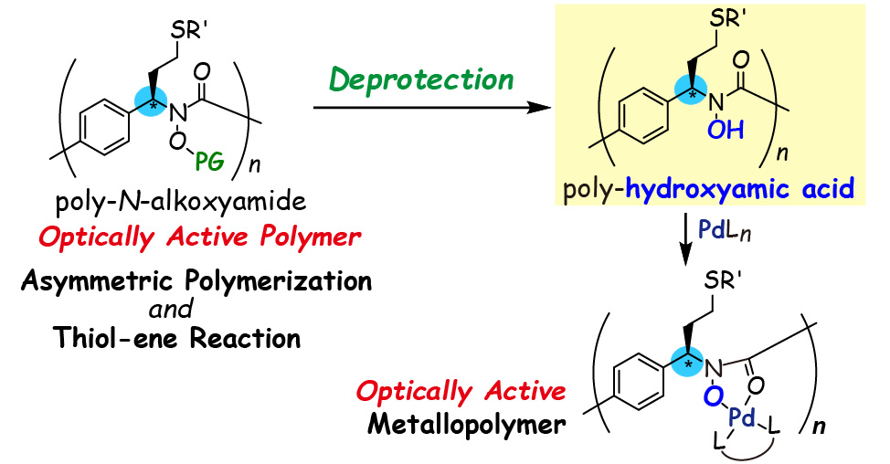
-
Naoya Kanbayashi,* Shunya Kitahara, Taka-aki Okamura, Kiyotaka Onitsuka*
"Carbonylation-Mediated End-Functionalization of Poly(3-hexylthiophene) with Broad Functional Group Compatibility"
Macromolecule, 2026, 59 DOI:10.1021/acs.macromol.6c00042
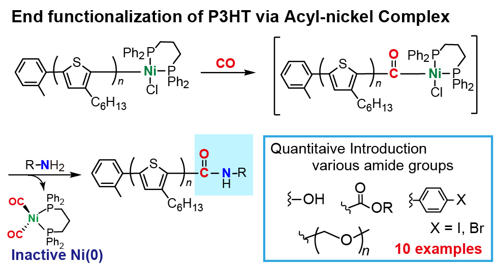
2025
-
Naoya Kanbayashi
"Three-Dimensional Structural Control Based on Precision Polymerization"
Polymers "Topics and Products", 2025, 74(11),615-616
DOI:10.1295/kobunshi.74.11_615
-
Naoya Kanbayashi,* Kota Kawasaki, Kiyotaka Onitsuka*
"Synthesis of a Precursor for Polymer Backbone Transformation via Quinoline N-Oxidation and Subsequent C-H Activation"
Chem. Lett., 2025, 54,upaf193. DOI:10.1093/chemle/upaf193
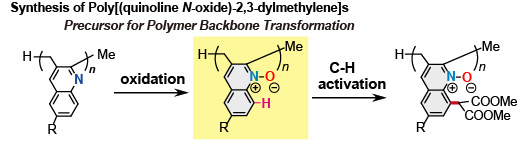
-
Naoya Kanbayashi,* Aoto Nakajima, Taka-aki Okamura, Kiyotaka Onitsuka*
"Orientation Control of Helical Poly(quinoline-2,3-diylmethylene) in Solution using a Tetraphenylporphyrin Scaffold"
Macromolecule, 2025, 58, 8707-8715. DOI:10.1021/acs.macromol.5c01234
Selected as "Cover"(Cover)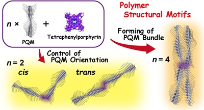
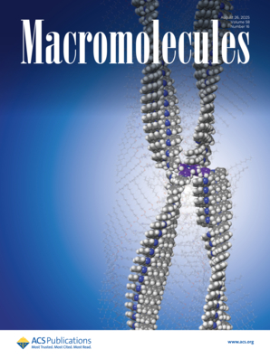
2024
-
Naoya Kanbayashi,* Sora Odagaki, Kiyotaka Onitsuka*
"Side Chain Modification of π-Stacked Helical Poly(quinoline-2,3-diylemethylene) via Thiol-Ene Reaction"
Polym. Chem., 2024, . DOI:10.1039/D4PY00583J
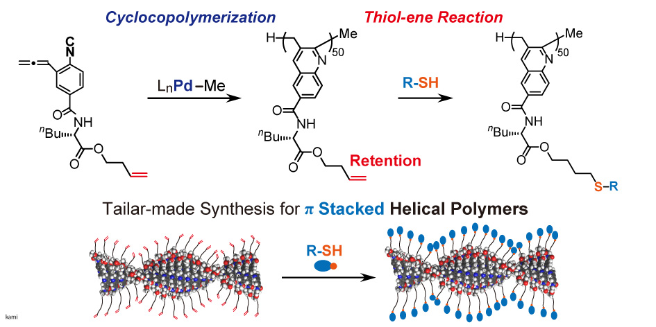
-
Naoya Kanbayashi,* Sora Odagaki, Nano Kobayakawa, Hiroyuki Kato, Kiyotaka Onitsuka*
"Direct Introduction of Cysteine Derivatives into the Chain-End of Helical Poly(Quinoline-2,3-diylmethylene)s: Densely Packed Monolayers on Au Substrates"
Macromolecule, 2024, 57, 7787-7797. DOI:10.1021/acs.macromol.4c00561
Selected as "Front cover"(Cover)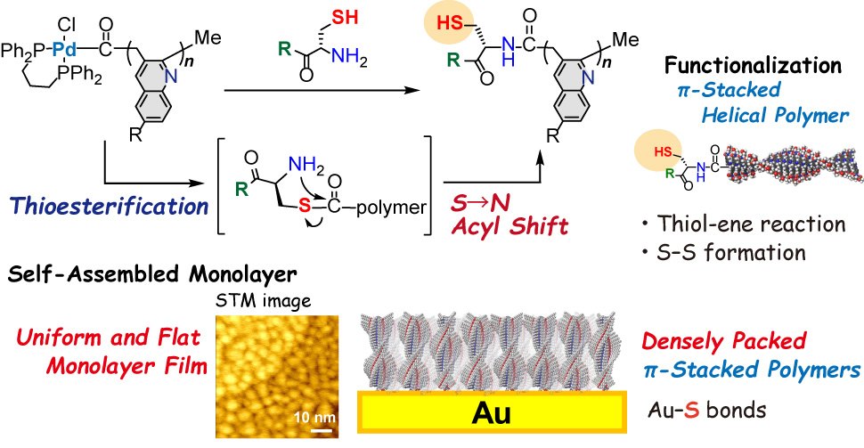
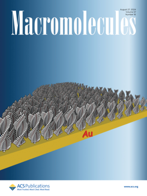
-
Jared M. Keever, Benjamin J. Pedretti, Zachary W. Brotherton, Jennifer Imbrogno, Yuki Kataoka, Jacob Baltzegar, Naoya Kanbayashi, Nathaniel A. Lynd*
"Chain extension epoxide polymerization to well-defined block polymers using a N-Al Lewis pair catalyst"
J. Polym. Sci., 2024, 62 2527-2538. DOI:10.1002/pol.20240002
2023
-
Naoya Kanbayashi,* Ryoga Yamamoto, Taka-aki Okamura, Kiyotaka Onitsuka*
"Living Cyclocopolymerization via Alternating Insertion of Alkyl Isocyanide and Allene to the Organonickel Complex"
Macromolecules, 2023, 56,8658-8665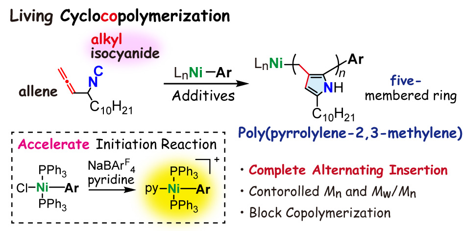
-
Naoya Kanbayashi,* Manami Narukawa, Kiyotaka Onitsuka*
"Facile End-functionalization of Poly(quinolylene-2,3-methylene) Using the Terminal Palladium Complex: Thiocarbonylation through Formation of an Acyl-Palladium Complex at the Polymer Terminal"
Macromol. Rapid. Commun., 2023, 44, 2300251. DOI:10.1002/marc.202300251
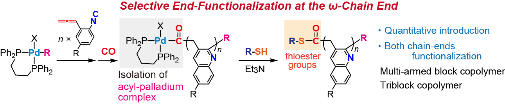
-
Naoya Kanbayashi
"Construction of new π-stacked polymers based on precise polymerization reactions"
Research Profiles 2023 in Osaka University HP -
Naoya Kanbayashi,* Miho Nishio, Taka-aki Okamura, Kiyotaka Onitsuka*
"Synthesis of Helically π-Stacked Poly(quinolylene-2,3-methylene)s with Anthracene Derivatives at the Chain End: Intramolecular Energy Transfer Based on the π-Stacked Architecture"
Polym. Chem, 2023, 14. DOI:10.1039/D2PY01179D
Selected as "OutsideFrontcover"(DOI: 10.1039/D3PY90011H)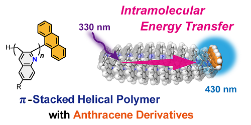
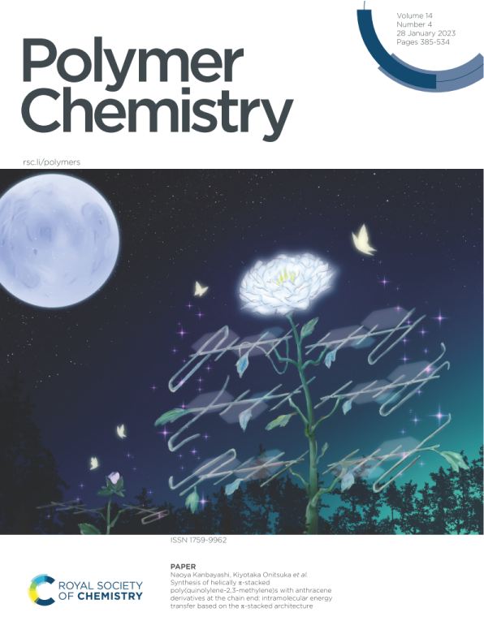
2022
-
Naoya Kanbayashi
"Elucidation of Structural Stabilization and Formation Mechanism of π-Stacked Polymers－"
Industry & Chemical Industry「Division Topics」, 2022, 75(11), 825. HP -
Naoya Kanbayashi,* Kazuki Yamazaki, Miho Nishio, Kiyotaka Onitsuka*
"Synthesis Methodology of End-Functionalized Poly(quinolylene-2,3-methylene)s: Living Cyclocopolymerization Using Aryl Palladium Initiators Conveniently Prepared from Versatile Aryl Halide"
Macromolecules, 2022, 55,5027-5037 DOI:10.1021/acs.macromol.2c00826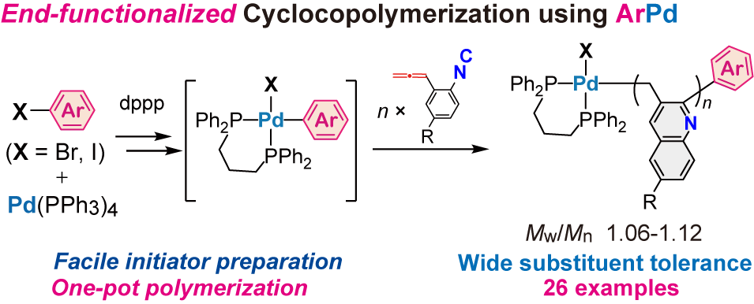
-
Naoya Kanbayashi,* Yuki Kataoka, Taka-aki Okamura, Kiyotaka Onitsuka*
"Stability Enhancement of π-Stacked Helical Structure using Substituents of Amino Acid Side Chain: Helix Formation via NucleationElongation Mechanism"
J. Am. Chem. Soc, 2022, 144, 6080-6090. DOI:10.1021/jacs.2c01337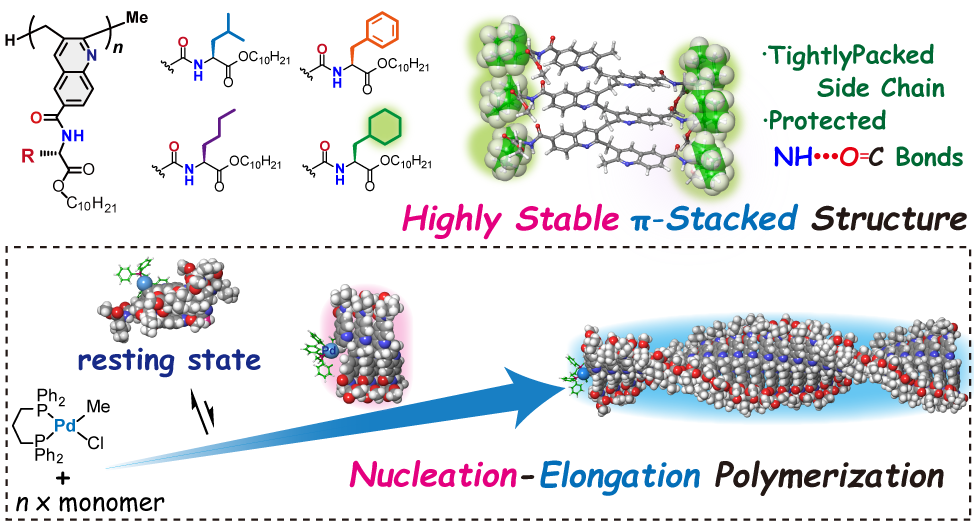
2021
-
Yuki Ishido, Naoya Kanbayashi,* Taka-aki Okamura, Kiyotaka Onitsuka*
"Conformational Switch of Arylopeptide: Helix-helix Transition Based on Side Chain Solvation"
Macromol. Rapid. Commun., 2021, Accepted. DOI:10.1002/marc.202100250 Selected as "Frontcover"(DOI: 10.1002/marc.202170051)

2020
-
Naoya Kanbayashi,* Marina Saegusa, Yuki Ishido, Taka-aki Okamura, Kiyotaka Onitsuka*
"Synthesis of Optically Active Polymer Containing a Planar Phthalimide Backbone by Asymmetric Polymerization"
Polym. Chem., 2020, 11, 6233-6388. (DOI:10.1039/D0PY01073A)
Selected as "OutsideFrontcover"(DOI: 10.1039/D0PY90156C)

-
Naoya Kanbayashi
"イソシアニドを基盤とした環化共重合反応－イソシアニドと不飽和炭化水素を組み合わせた環化重合反応への挑戦－"
Industry & Chemical Industry「飛躍する若手研究者」, 2020, 73(7), 580-581. -
Yuki Kataokao, Naoya Kanbayashi,* Naoka Fujii, Taka-aki Okamura, Takeharu Haino, Kiyotaka Onitsuka*
"Construction of Helically Stacked π-Electron Systems in Poly(quinolylene-2,3-methylene) Stabilized by Intramolecular Hydrogen Bonds"
Angew. Chem., 2020, accepted. DOI:10.1002/anie.202002734
selected "Hot Paper", highlighted as "Frontspiece"(DOI: 10.1002/anie.202082661)

-
Yuki Ishido, Naoya Kanbayashi,* Naoka Fujii, Taka-aki Okamura, Takeharu Haino, Kiyotaka Onitsuka*
"Folding Control of Non-natural Glycopeptide Using Saccharide-coded Structural Information for Polypeptide"
Chem. Commun., 2020, 56, 2767-2770. DOI:10.1039/C9CC10030J
2019
-
Naoya Kanbayashi,* Taka-aki Okamura, Kiyotaka Onitsuka*
"Living Cyclocopolymerization Through Alternating Insertion of Iso-cyanide and Allene via Controlling the Reactivity of the Propaga-tion Species: Detailed Mechanistic Investigation"
J. Am. Chem. Soc, 2019, 141, 15307-15317.
-
Naoya Kanbayashi*
"Synthetic Approach for Optically Active Polymers Through the Combination of Asymmetric Chirogenic Polymerization and Post-polymerization Modification"
Polym. J. , 2019, 51, 1235-1247. Focus Review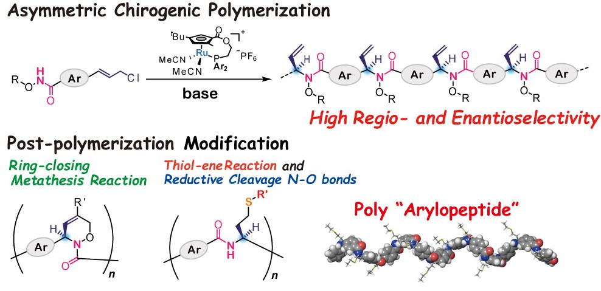
-
Yuki Ishido, Naoya Kanbayashi*, Taka-aki Okamura, Kiyotaka Onitsuka*
"Side-Chain-Driven Dual Structural System of Poly-Arylopeptide: Selective Helical Formation Derived from Aromatic Ring Flips on the Backbone"
ACS Macro Lett., 2019, 8694-699. Cover selected DOI: 10.1021/acsmacrolett.9b00249

-
Naoya Kanbayashi
Selected as Hot Topics in KOBUNSHI HIGH POLYMERS. JAPAN「Polymers」, 2019, 68(12),641 -
Naoya Kanbayashi, Kiyotaka Onitsuka
"Cyclocopolymerization Based on Alternative Insertions of Isocyanide and Undaturated Hydorocarbons into a Palladium-Carbon bond"
KOBUNSHI HIGH POLYMERS. JAPAN「Polymers」, 2019, 68(2),63-65
2018
-
Naoya Kanbayashi*, Jun Ikegami, Yuki Kataoka, Taka-aki Okamura, Kiyotaka Onitsuka*
"Cyclocopolymerization Based on Alternating Insertions of Isocyanide and Allene Units into Palladium-Carbon Bond"
Macromolecules, 2018, ,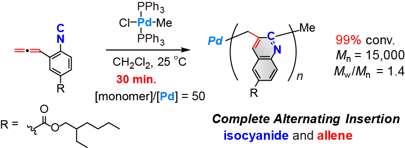
-
Yuki Kataoka, Naoya Kanbayashi*, Taka-aki Okamura, Kiyotaka Onitsuka*
"Polymerization Based on Alternating Insertion of an Isocyanide and Alkyne into Palladium-Carbon Bonds"
Polym. Chem., 2018, 9, 2797-2804 DOI: 10.1039/C8PY00381E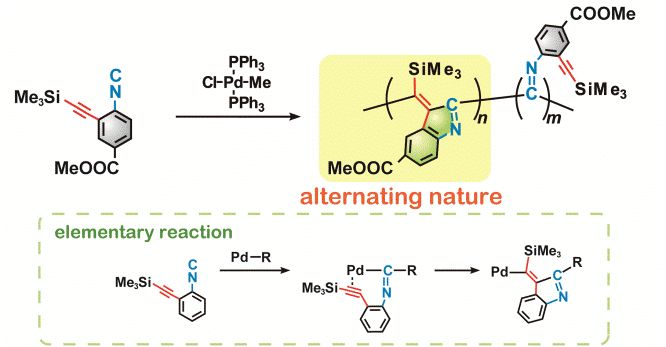
-
Naoya Kanbayashi*, Shingo Tokuhara, Tomoko Sekine, Yuki Kataoka, Taka-aki Okamura, Kiyotaka Onitsuka*
"Synthesis of helical polyisocyanides bearing aza-crown ether groups as pendant"
J. Polym. Sci., Part A: Polym. Chem., 2018, 56,496-504 DOI: 10.1002/pola.28919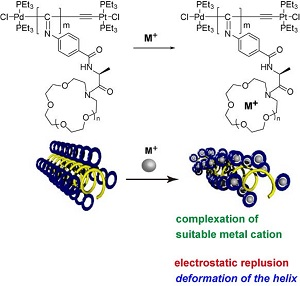
2017
-
Yuki Ishido, Naoya Kanbayashi*, Taka-aki Okamura, Kiyotaka Onitsuka*
"Synthesis of Non-natural Helical Polypeptide via Asymmetric Polymerization and Reductive Cleavage of N-O Bond"
Macromolecules, 2017, 50, 5301-5307. DOI: 10.1021/acs.macromol.7b01426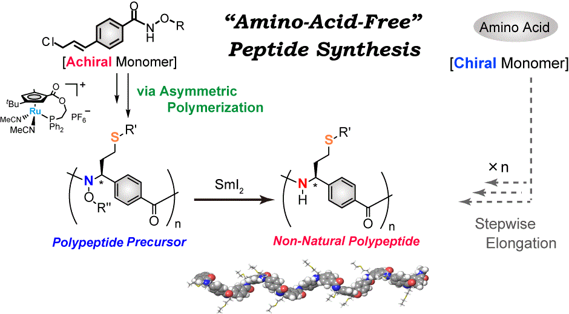
-
Naoya Kanbayashi
"A New Synthetic Approach for Optically Active Polymers via Asymmetric Polymerization
Kobunshi Ronbunshu (New Wave of Polymer Science and Engineering), 2017, DOI: 10.1295/koron.2017-0027 -
Naoya Kanbayashi*, Sou Miyamoto, Yuki Ishido, Taka-aki Okamura, Kiyotaka Onitsuka*
"Post-Polymerization Modification of the Side Chain in Optically Active Polymer by Thiol-Ene Reaction"
Polym. Chem., 2017, 8, 985-994. Front Cover selected DOI: 10.1039/C6PY01946C Introduced in NEWS of RSC HPHP（2017.3.23）

2016
-
Naoya Kanbayashi*, Kazuki Hosoda, Taka-aki Okamura, Sadahito Aoshima, Kiyotaka Onitsuka*
"Enantio- and Diastereoselective Polymerization: Asymmetric Allylic Alkylation Catalyzed by a Planar-chiral Cp′Ru Complex"
Polym. Chem., 2016, 7, 3691-3699. DOI: 10.1039/C6PY00484A
-
Naoya Kanbayashi*, Arisa Yamazawa, Koichiro Takii, Taka-aki Okamura, Kiyotaka Onitsuka*
"Planar-chiral Cyclopentadienyl Ruthenium Catalyzed Regio- and Enantioselective Asymmetric Allylic Alkylation of Silyl Enolates under Unusually Mild Condition"
Adv. Synth. Catal., 2016, 258, 555-560. DOI: 10.1002/adsc.201500970 SYNFACTS selected (Synfacts 2015, 11, 1079.) DOI: 10.1055/s-0035-1562073
2015
-
Naoya Kanbayashi*, Taka-aki Okamura, Kiyotaka Onitsuka*
"New Synthetic Approach for Optically Active Polymer Bearing Chiral Cyclic Architecture: Combination of Asymmetric Allylic Amidation and Ring-closing Metathesis Reaction"
Macromolecules, 2015, 48, 8437-8444. DOI: 10.1021/acs.macromol.5b02067
-
Naoya Kanbayashi*, Kazuki Hosoda, Masanori Kato, Koichiro Takii, Taka-aki Okamura, Kiyotaka Onitsuka*
"Enantio- and diastereoselective asymmetric allylic alkylation catalyzed by planar-chiral cyclopentadienyl ruthenium complex"
Chem. Commun., 2015, 10895-10898. DOI: 10.1039/C5CC02414E SYNFACTS selected (Synfacts 2015, 11(10), 1079.) DOI: 10.1055/s-0035-1560225
2014
-
Naoya Kanbayashi*, Taka-aki Okamura, Kiyotaka Onitsuka
"New Method for Asymmetric Polymerization: Asymmetric Allylic Substitution Catalyzed by a Planar-Chiral Ruthenium Complex"
Macromolecules, 2014, 47, 4178-4185. DOI: 10.1021/ma5008623
2013
-
Naoya Kanbayashi, Kazuhiro Takenaka, Taka-aki Okamura, Kiyotaka Onitsuka*
"Asymmetric Auto-Tandem Catalysis with a Planar-Chiral Ruthenium Complex: Sequential Allylic Amidation and Atom-Transfer Radical Cyclization"
Angew. Chem., Int. Ed., 2013, 52, 4897-4901.
DOI: 10.1002/anie.201300485 SYNFACTS selected (Synfacts 2013, 9, 0760.)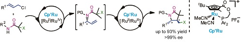
2012
-
Koichiro Takii, Naoya Kanbayashi, Kiyotaka Onitsuka*
"Modular synthesis of optically active lactones by Ru-catalyzed asymmetric allylic carboxylation and ring-closing metathesis reaction"
Chem. Commun., 2012, 48, 3872-3874.
DOI: 10.1039/C2CC18137A SYNFACTS selected (Synfacts 2012, 8, 0634.)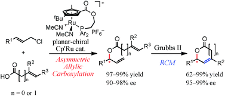
2011
-
Naoya Kanbayashi, Kiyotaka Onitsuka*
"Ruthenium-Catalyzed Regio- and Enantioselective Allylic Substitution with Water: Direct Synthesis of Chiral Allylic Alcohols"
Angew. Chem., Int. Ed., 2011, 50, 5197-5199.
DOI: 10.1002/anie.201101078 SYNFACTS selected (Synfacts 2011, 8, 0876.)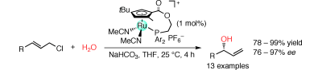
2010
-
Naoya Kanbayashi, Kiyotaka Onitsuka
"Enantioselective Synthesis of Allylic Esters via Asymmetric Allylic Substitution with Metal Carboxylates Using Planar-Chiral Cyclopentadienyl Ruthenium Catalysts"
J. Am. Chem. Soc., 2010, 132, 1206-1207.
DOI: 10.1021/ja908456b SYNFACTS selected (Synfacts 2010, 4, 0452.)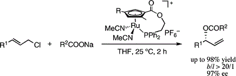
Copyright © 2025
Kanbayashi Lab, Kyoto Institute of Technology.